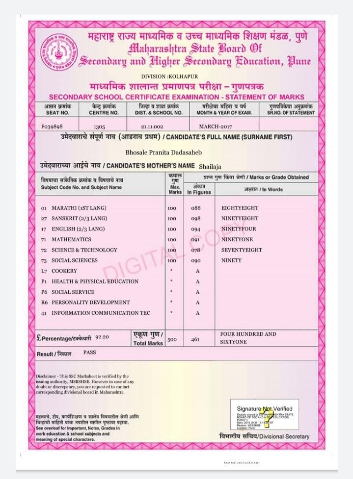
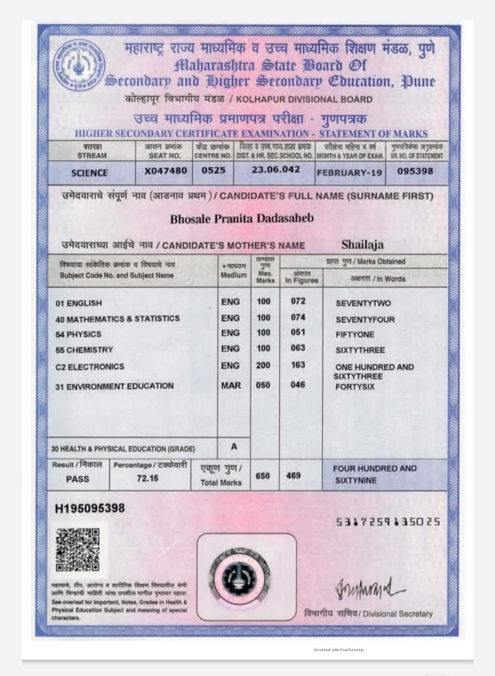
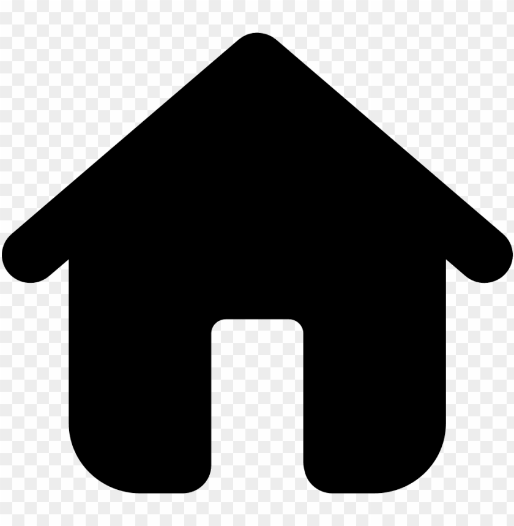

♦Then I have completed my secondary education from Kanya Shala,Wai.This is the place from where I got upliftment. I built up myself there.And found some hidden qualities of myself.

After 10th as everyone has question in front of them...What to do next?
But having my intrest in Maths and Physics,I chose Science as my best career option.
♦I have completed my Higher Secondary Education from Disha Academy,Wai. with grade of 73%.

♦I opted Engineering as I got good marks in CET and JEE Examinations.
With this good marks I got admission in ADCET Institute. And I am very happy for becoming part of our ADCET family.
